Beth, this is every note from your second deck, in your words, with the site before and after. The live site is at the same link as before. The pictures on the left are how the page looked when you sent your notes; the pictures on the right are how it looks now. Switch to Phone at the top right to see the same on a phone.
The tabs
You wrote: Top 4 tabs can we change to home / projects / services / get in touch
Done. Home, Projects, Services, Get in touch. The same four sit in the footer.
The hero
You wrote: I have sent some drone footage via WeTransfer, can we use this as the carousel media. And the new line: Specialists in delivering premium residential builds, renovations and extensions across Melbourne
Done. Your five drone clips play in the hero, one after the other, muted. Because the footage is portrait, a desktop shows the middle band of each shot and a phone shows the full frame. Your line is in word for word. There is a small pause button in the corner for anyone who wants the picture to hold still.
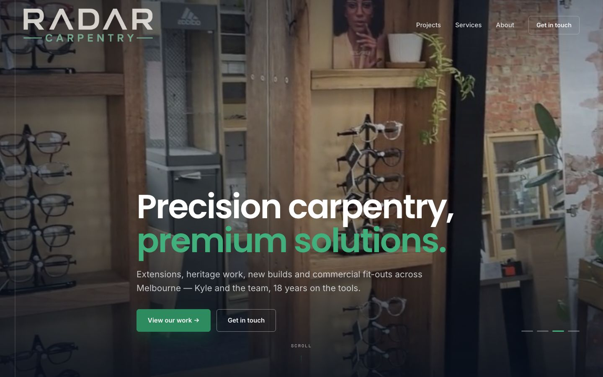
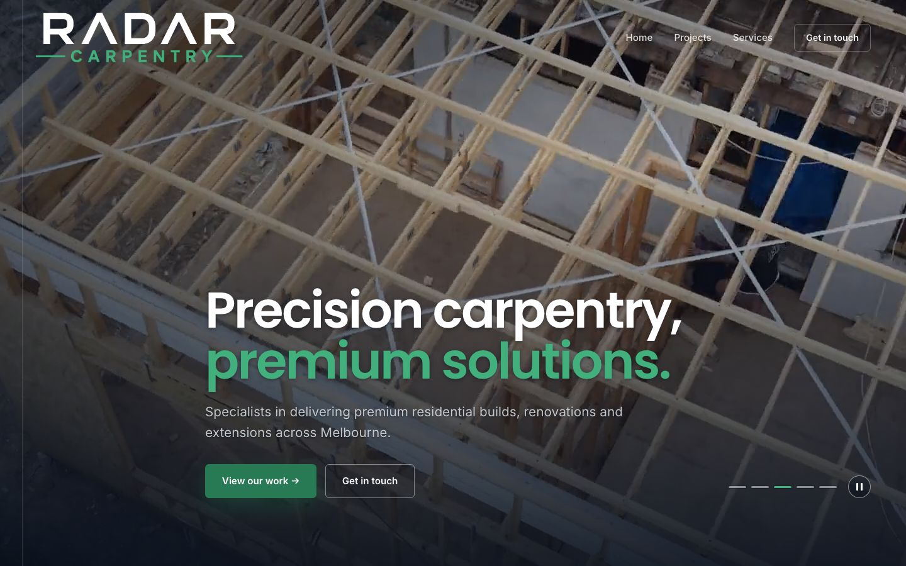
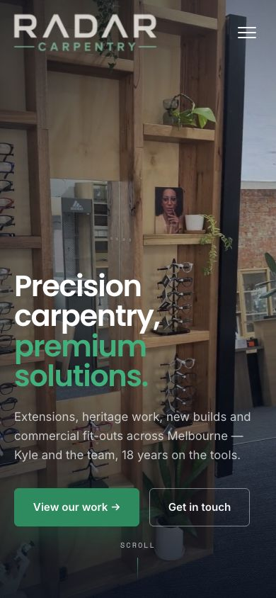
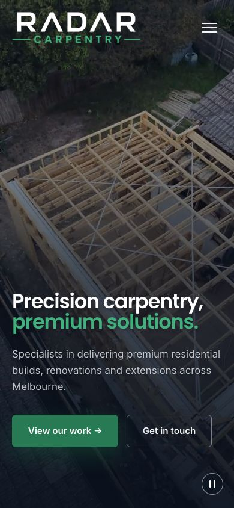
The logo
You wrote: The colour of the green in the logo looks slightly off vs the colour of the green text, prefer the colour of the text
Done. Your new logo file is in, and its green is the same green as the headline.
Why Radar
You wrote: Remove (the empty band). Change The trade to WHY RADAR. 18 years experience, across all areas of domestic and commercial carpentry. Replace this picture with the video called pergola build
All done, with one confession. That band was meant to show your paragraph, We're a team of carpenters, and it never displayed on your screen because of a fault on our side. Fixed. Your paragraph now sits here under Why Radar with your 18 years line, and the pergola clip plays beside it. The Instagram sticker is part of that clip, so it shows. If Kyle has the original without the sticker, send it and it swaps straight in. If you would rather the paragraph went altogether, say so and it goes.
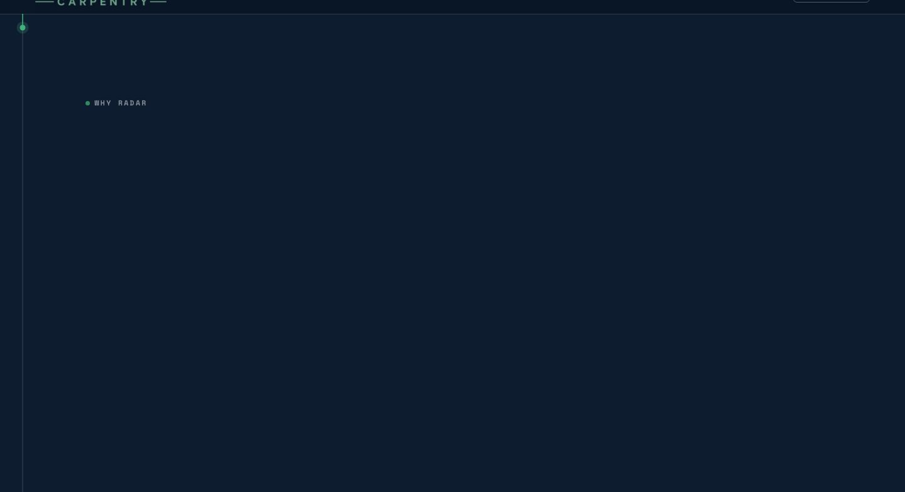
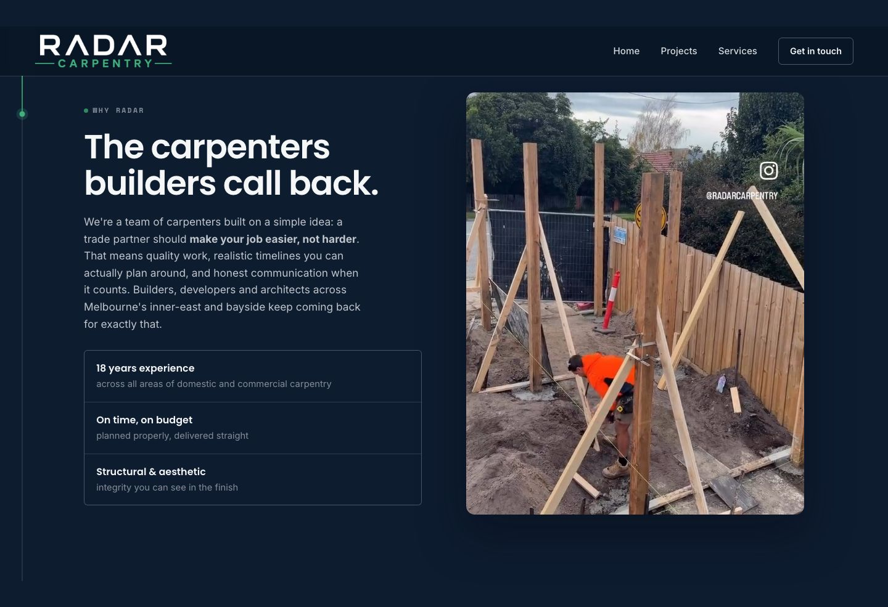
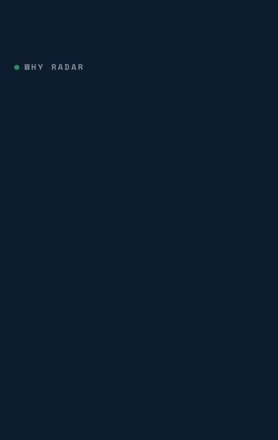
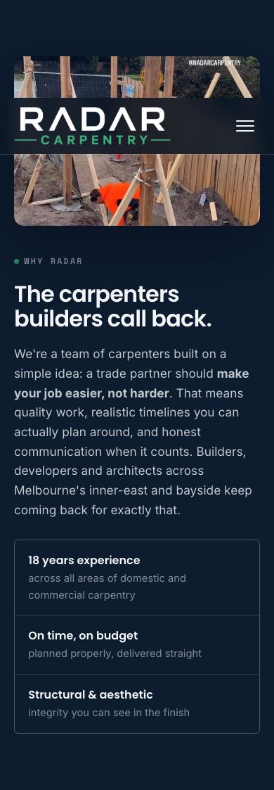
Projects
You wrote: Replace Recent projects around Melbourne with just PROJECTS. Can this be a rotating banner of Instagram feed uploads instead of the current videos, fed from Insta?
Done. The heading is just Projects and the old videos are gone. The strip now rolls your real project photos, and it is built to fill itself from your Instagram once we connect your account, which is a couple of clicks we will do together on the call. After that, your latest posts appear here on their own.
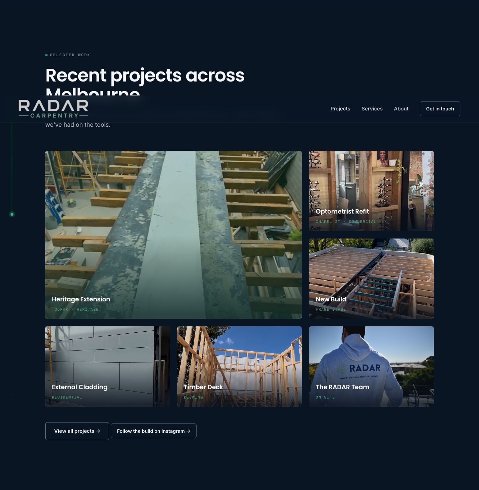
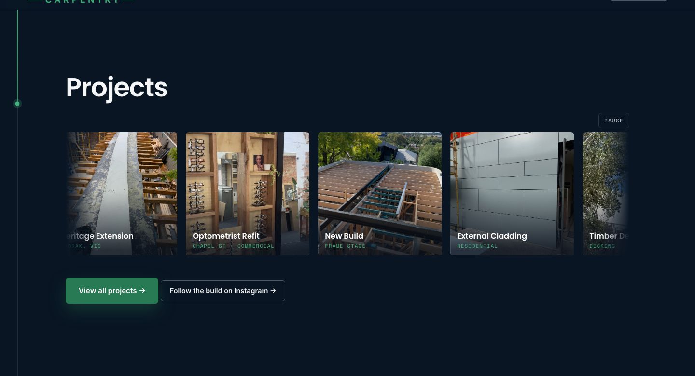
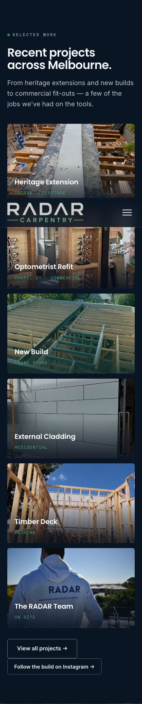
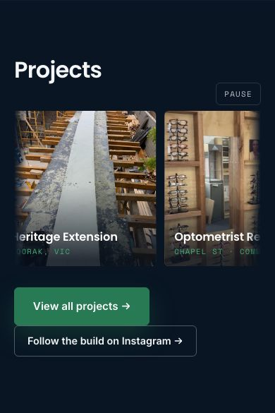
Contact
You wrote: Remove the text in yellow and re-centre the contact information. Remove request a quote and just say get in touch
Done on the home page and on the contact page.
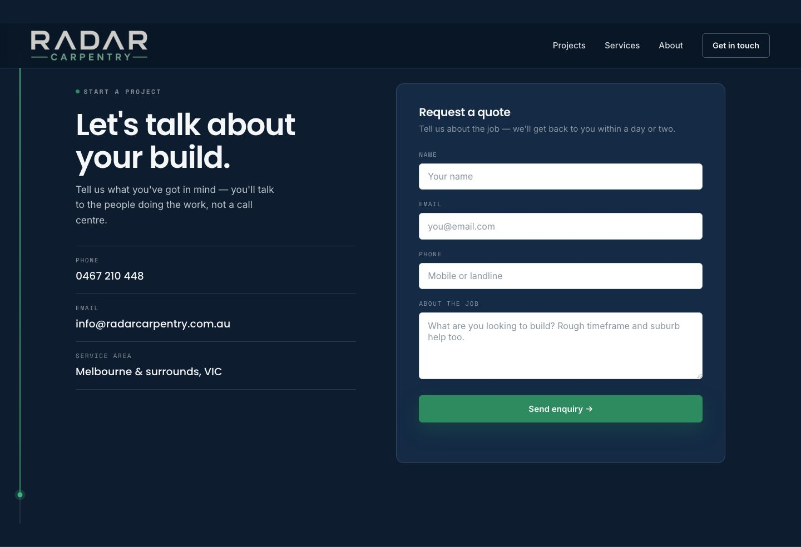
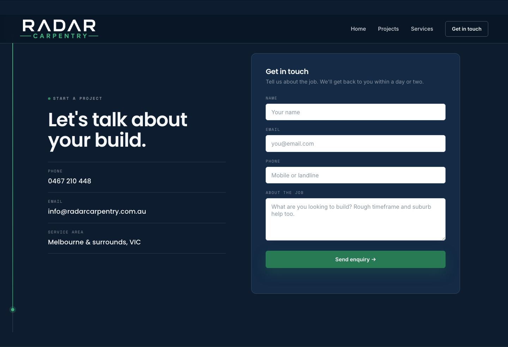
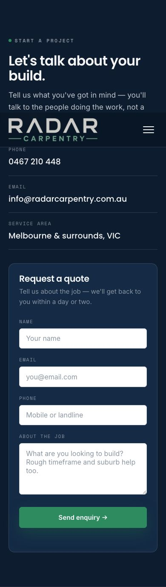
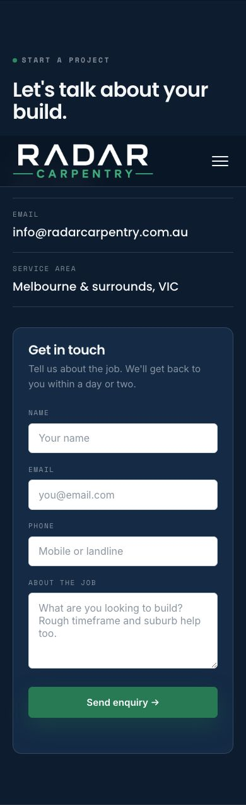
Footer
You wrote: Can we get the icons here rather than the words. Can we have precision carpentry, premium solutions in bold and two colours wherever we have it
Done. Instagram and Facebook are icons, and the tagline is bold in two colours in every footer and on the picture that shows when the link is shared.
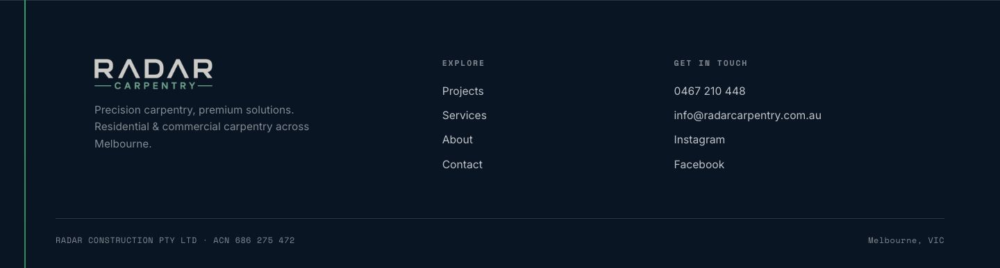
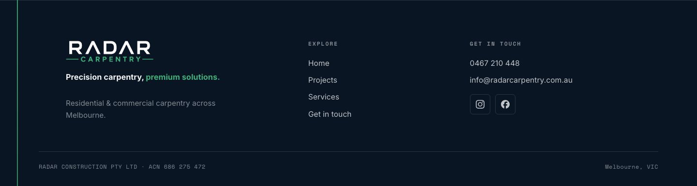
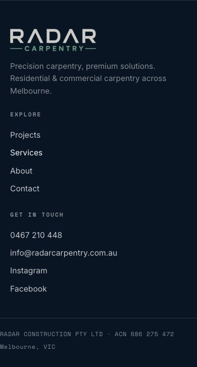
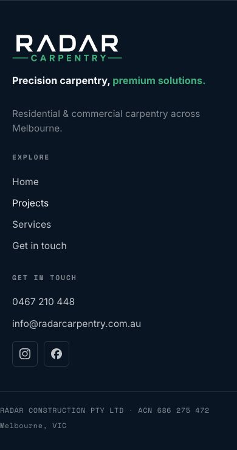
Three things for our call
- Connecting your Instagram to the site: about three minutes, we do it together.
- The pergola clip: keep it with the sticker, or hold the spot until a clean file turns up.
- Your Why Radar paragraph: keep it where it now sits, or cut it.
Last updated: 9 September 2026. One small reviewer card that showed an odd display name is hidden; the rating still reads 5.0 from ten reviews, which is true.